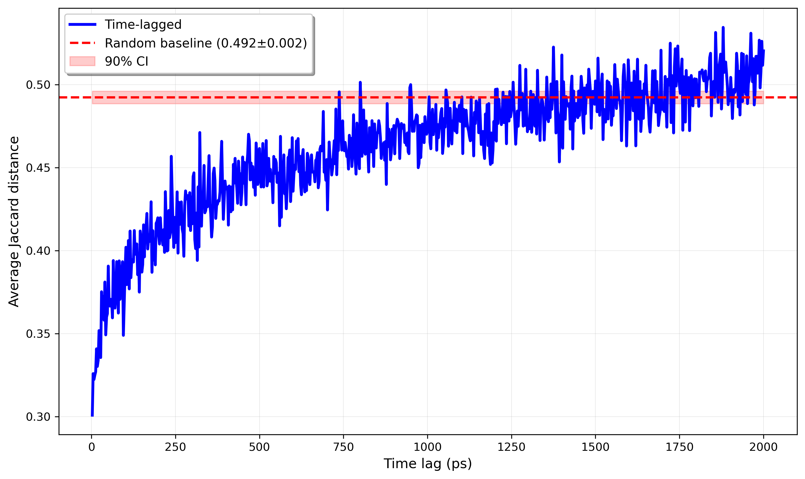
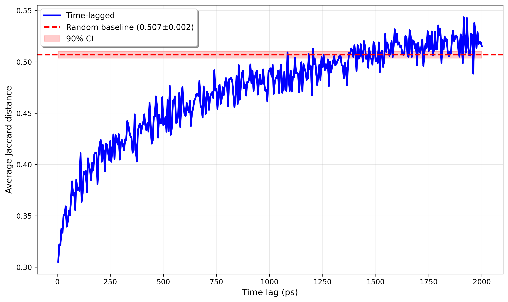
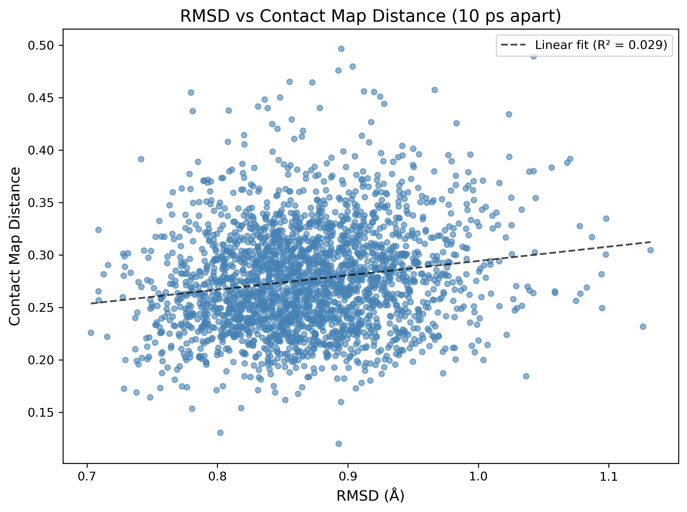
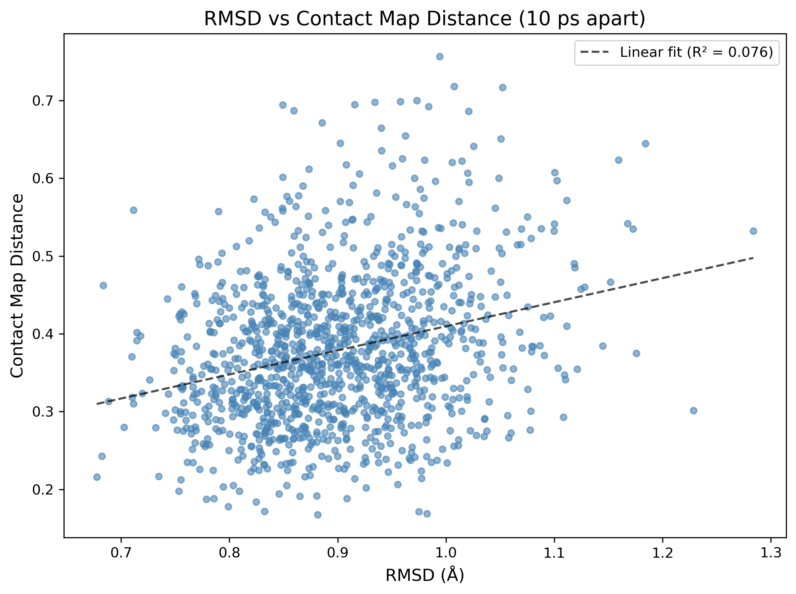

Recently, I’ve been thinking about molecular dynamics (MD), specifically in the context of protein-ligand simulations. An interesting question here is as follows: given two randomly sampled snapshots (call them ‘A’ and ‘B’) from a long MD trajectory, do we think they’re kinetically close? Loosely, can we foresee snapshot A evolving into snapshot B over a short (say, between 5-10 ps) period of time?
A method that can cheaply answer this question is clearly useful. For example, such a method could be used for validating trajectories produced by generative models (which is being attempted). In some capacity, this question has been thoroughly addressed through work on Markov state models (MSMs). This approach takes loads of MD data (often microseconds) for a single complex, calculates a bunch of features (e.g. Kabsch RMSD, dihedrals, etc.), and then uses methods like TICA to find ‘maximally slow’ modes i.e. the system’s kinetic basins. However, constructing MSMs requires a lot of MD data-typically at least microseconds. They also don’t directly/fully answer the original question.

kinetic descriptors
Naturally, we might try to find some feature of a MD snapshot that correlates strongly with its kinetic descriptors. I think a reasonable first guess (and my own) is the RMSD between snapshots (more precisely, Kabsch RMSD makes sense here to account for any system-wide behavior like translation or rotation). However, there are a lot of intuitive issues with this. For one, this is purely a geometric descriptor; while two frames that look similar might be kinetically close, it doesn’t necessarily have to be the case. As an extreme example, we could consider two different pictures of a ball in the air. Without knowing the velocity of the ball in each picture, we can’t determine if the two balls are kinetically close; one of them could be moving rapidly up while the other is in a dive.
Maybe the right idea, then, is to save instantaneous particle velocities for every frame in a trajectory. This guarantees one more degree of kinetic closeness. However, velocities tend to decorrelate over very short (sub picosecond) timescales in most biomolecular simulations, so they probably won’t be useful for establishing continuity over 5-10 ps jumps. It’s pretty easy to see this mathematically—in the Langevin dynamics model, biomolecular simulations tend to use friction coefficients of roughly 1 ps^(-1). The velocity autocorrelation can be shown to be approximately of the form
where is the friction coefficient. After 5 ps, the correlation is roughly on the order of , and after 10ps, .
The next idea that occurred to me was using contact-maps: a matrix with the protein’s heavy atoms on one axis and the ligand’s heavy atoms on the other such that
where is some cutoff radius fed as input. This is the most barebones construction of a contact map; binary mappings instead of something continuous as well as a fixed cutoff radius instead of something more principled, e.g. based on the interacting atoms’ vdW radii. Importantly, contact maps capture the system topology. The evolution of protein-ligand systems is strongly dependent on hydrogen bonds, vdW interactions, and short-range electrostatics. Contact-maps should capture some amount of this, whereas RMSD probably does so to a lesser degree. It’s worth keeping in mind that there are still lots of important physical interactions that we miss with basic contact maps: water bridges, long range electrostatics, etc., so this definitely isn’t a solution to the original question on its own. Still, in playing around with contact maps for medium-length (several nanosecond) protein-ligand simulations, I thought the resulting data was pretty cool.
contact maps as a gate
My idea was to create some sort of gating threshold with contact maps; given two frames, we calculate their contact maps and define their distance via some metric. I used Jaccard distance. Then, if their distance is below some threshold, we consider the two frames to be candidates for kinetic closeness. But establishing this threshold requires some data. A fixed distance threshold clearly wouldn’t work; consider the case of a large, pocket-nestling drug versus a small, surface-binder:


Two consecutive snapshots from the former would likely have low Jaccard distances, whereas two consecutive snapshots from the latter could have much higher Jaccard distance. Thus, it makes sense to determine such a threshold based on some ‘calibration’ MD data for a given complex. From this data, we could consider sampling pairs of consecutive frames, then pairs with a frame in between, then two pairs in between, etc., and calculate the average Jaccard distance for each of these groups. We should also calculate the average Jaccard distance for a set of pairs that’s completely randomly generated to serve as a decorrelation baseline.
I think it’s good practice to think about the expected behavior before doing the aforementioned analysis on some trajectories. Kinetic-related correlations in Langevin dynamics, as previously touched on, tend to decay exponentially. So, we might hope that the Jaccard distance plotted as a function of time between sampled frames should yield something approximately proportional (excluding a positive, vertical offset) to , where .


And, fortunately, this is what we see! Personally, I think it’s very cool that such a simple model captures such good signal, especially since this approach implements a super rudimentary contact map.
comparisons to rmsd
All that is clear from this is that contact maps carry good kinetic signal. I’m definitely not making a direct comparison of this approach to something like RMSD to answer the original question. Doing so would require extensive benchmarking across lots of different systems. Moreover, these systems would have to have lots of existing MD data in order to construct a MSM or something similar to actually verify kinetic similarity more rigorously.
Of course, while contact maps might intuitively seem more effective, as previously mentioned, we fail to take lots of important data into account with them. And, even though a low RMSD between frames doesn’t guarantee key bonds and vdW interactions are present in both, it makes sense to think that there will be a strong correlation.
This being said, it’s illuminating to directly compare RMSD and contact map distance. I did this by plotting the two against each other for every pair of frames 10ps apart from each of the two trajectories studied above:


This surprised me! The poor correlation between the two descriptors is a good thing—it strongly suggests that, at least for this small sample of two systems, contact map distance and RMSD encode different kinetic information about the system. For lightweight trajectory validation or frame stitching, contact maps look like a surprisingly effective proxy—that’s pretty exciting!
appendix: contact map code
The contact map construction code uses standard NumPy built-ins.
def contact_map_diff(u, frameA, frameB, ligand_resname="LIG", cutoff=4.0):
ligand = u.select_atoms(f"resname {ligand_resname} and not name H*")
pocket = u.select_atoms("protein and not name H*")
contact_maps = []
for frame in [frameA, frameB]:
u.trajectory[frame]
LA, PA = ligand.positions, pocket.positions
# numpy broadcasting for fast pairwise calculations
LA_expanded = LA[:, None, :] # shape: (N_lig, 1, 3)
PA_expanded = PA[None, :, :] # shape: (1, N_poc, 3)
distances = np.linalg.norm(LA_expanded - PA_expanded, axis=-1) # shape: (N_lig, N_poc)
contact_maps.append(distances < cutoff)
dA, dB = contact_maps[0].ravel(), contact_maps[1].ravel()
union = np.count_nonzero(dA | dB)
if union == 0:
return 0.0
inter = np.count_nonzero(dA & dB)
return float(1.0 - inter/union)And the random baseline was generated as follows:
n_bootstrap = 30
bootstrap_means = []
for _ in range(n_bootstrap):
random_diffs = []
for _ in range(num_samps):
frame1, frame2 = np.random.choice(range(0, num_frames - 1), size=2, replace=False)
diff = contact_map_diff(traj1, frame1, frame2, cutoff=4.6)
random_diffs.append(diff)
bootstrap_means.append(np.mean(random_diffs))
random_baseline = np.mean(bootstrap_means)
random_stderr = np.std(bootstrap_means) / np.sqrt(n_bootstrap)Where num_frames is the number of frames in the trajectory.
Special thanks to Arnav Singhal for reading drafts of this.